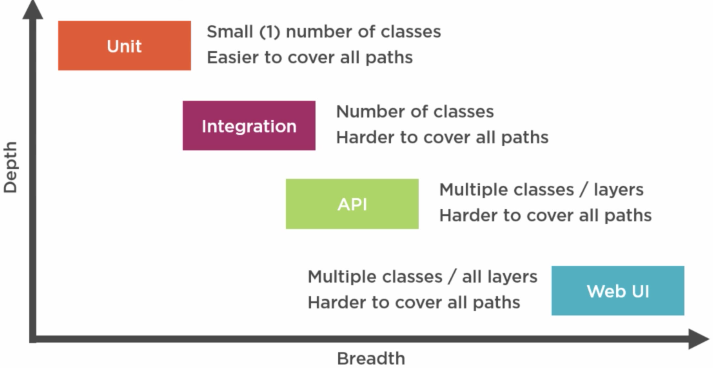
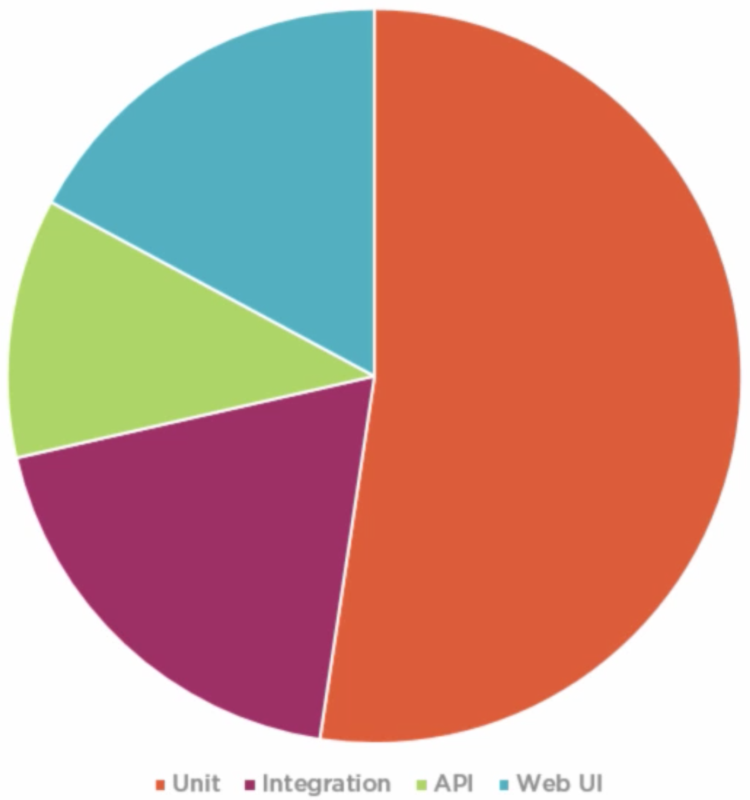
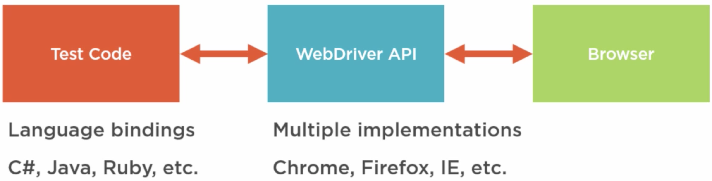

Why write automated web UI tests?
- Compare to unit, integration, and API tests
- Web UI tests as part of overall test suite
- Automated v. manual UI testing
- Overview of Selenium and SpecFlow
- Bridging the communications gap
Course Outline
- Introduction to Business Readable Web Testing
- Getting Started with Selenium
- Adding Business Readability with SpecFlow
- Creating More Maintainable Web Automation
Why Automated Web UI Tests?
- Unit
- Small (1) number of classes
- Easier to cover all paths
- Integration
- Number of classes
- Harder to cover all paths
- API
- Multiple classes/ layers
- Hard to cover all paths
- Web UI
- Multiple classes / All layers
- Hard to cover all paths

Web Tests as Part of the Overall Test Suite

Why Automated Web UI Tests?
- UI databinding errors
- Full stack integration errors
- Cliente/ server-side validation mismatch
- DB field being too small/ UI text field
- Serialization, data mapping, conversion
- Overall user experience
- Application flow
- Validation/ help message shown
- Web site configuration errors
- Run same tests against different browsers
- Not usually testing look & feel/ design
UI Automation Scenarion Selection Considerations
- Go where the profit is
- Risk mitigation approach
- Legal implications/ requirements
- Reputation of organization
- Data corruption
- Security/ privacy protection
- Most used features
- Unique/ differentiating features
- Consider minimum of 1 smoke test per page
Introducing Selenium
- Automate browsers
- Simulate a human interacting clicking buttons, typing text, etc.
- Selenium IDE
- Record automation test scripts
- Edit scripts
- WebDriver
- Code-based
- More maintanable
- Full power of programming language
Selenium WebDriver

Selenium WebDriver Examples
- Navigate to the home page
- Click the button with an ID of “apply”
- Type “sarah” into the name input
- Get the text context of the SPAN that has a CSS class of “confirmation”
- Choose the “Savings” radio button
- Check the tick box with an ID of “terms”
- Get the title of the current page
- Maximize the browser window
SpecFlow
- Write tests that the business can easily understand
- Better communication between development team and business
- Common spoke (non-code) language, e.g. English, French, etc
- Generally non-technical
- Ensure correct features are being built
- Ensure different scenarios are covered
- Use wit any type of tests, not just UI
SpecFlow and Selenium
SpecFlow:Given I’om on the home page
When I choose more info
Then I should be taken to new page
Selenium:
Go to home page
Click on more info
Get browser URL
Getting Started with Selenium